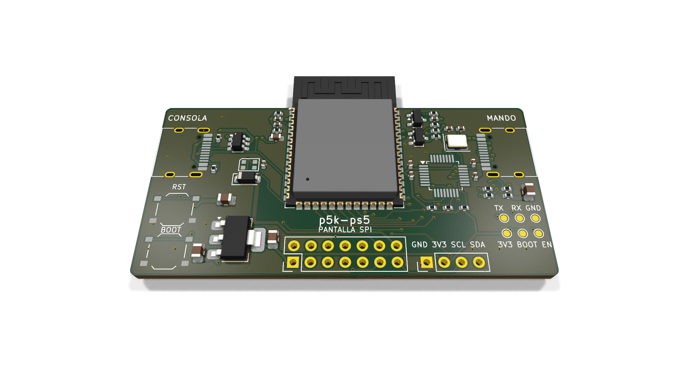

La placa p5k-ps5
Diseñada, sin fabricarTodo en una placa de 62 × 30 mm que llega montada de JLCPCB: la grabas y la enchufas. Da corriente al mando, trae botones, LED y puntos de prueba, y lleva grabado por detrás el QR de esta web.
- Tamaño
- 62 × 30 mm
- Cerebro
- ESP32-S3-WROOM-1 N16R8
- Lector del mando
- MAX3421E
- Conectores
- USB-C consola · USB-C mando
- Ampliable
- OLED I2C · pantalla SPI táctil
- Montaje
- JLCPCB, sin soldar nada